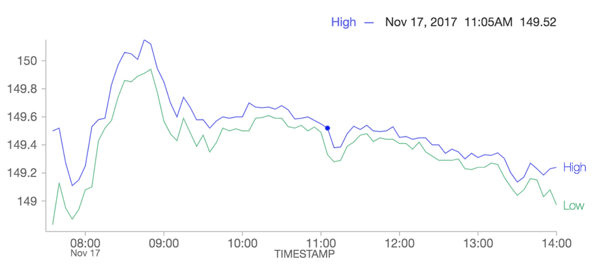
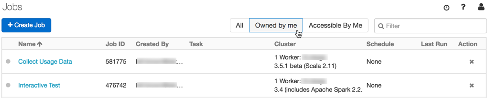
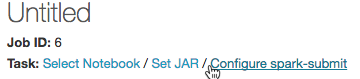
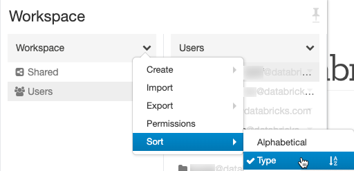

February 2018
Releases are staged. Your Databricks account may not be updated until a week after the initial release date.
Note
We are now providing Databricks Runtime deprecation notices in Databricks Runtime release notes versions and compatibility.
New line chart supports time-series data
Feb 27 - Mar 6, 2018: Version 2.66
A new line chart fully supports time-series data and resolves limitations with our old line chart option. The old line chart is deprecated, and we recommend that users migrate any visualizations that use the old line chart to the new one.

See Migrate legacy line charts for more information.
More visualization improvements
Feb 27 - Mar 6, 2018: Version 2.66
You can now sort columns in table output and use more than 10 legend items in a chart.
Delete job runs using Job API
Feb 27 - Mar 6, 2018: Version 2.66
You can now use the Job API to delete job runs, using the new jobs/runs/delete endpoint.
See Runs delete for more information.
Bring your own S3 bucket
Feb 27 - Mar 6, 2018: Version 2.66
New customers can now host their DBFS (Workspace) root, which stores account-wide assets, such as libraries, in their own AWS S3 bucket.
See Configure AWS storage (legacy) for more information.
KaTeX math rendering library updated
Feb 27 - Mar 6, 2018: Version 2.66
The version of KatTeX that Databricks uses for math equation rendering was updated from 0.5.1 to 0.9.0-beta1.
This update introduces changes that can break expressions that were written in 0.5.1:
\xLongequalis now\xlongequal(#997)[text]colorHTML colors must be well-formed. (#827)\llapand\rlapnow render contents in math mode. Use\mathllap(new) and\mathrlap(new) to provide the previous behavior.\colorand\textcolornow behave as they do in LaTeX (#619)
See the KaTeX release notes for more information.
Databricks CLI: 0.5.0 release
February 27, 2018: databricks-cli 0.5.0
Databricks CLI now supports commands that target the Libraries API.
The CLI also now supports multiple connection profiles. Connection profiles can be used to configure the CLI to talk to multiple Databricks deployments.
See Databricks CLI (legacy) for more information.
DBUtils API library
Feb 13-20, 2018: Version 2.65
Databricks provides a variety of utility APIs that let you work easily with DBFS, notebook workflows, and widgets. The dbutils-api library accelerates application development by
allowing you to locally compile and run unit tests against these utility APIs before deploying your application to a Databricks cluster.
See Databricks Utilities (dbutils) reference for more information.
Filter for your jobs only
Feb 13-20, 2018: Version 2.65
New filters on the Jobs list let you display only the jobs you own and only the jobs you have access to.

See Create and run Databricks Jobs for more information.
Spark-submit from the Create Job page
Feb 13-20, 2018: Version 2.65
Now you can configure spark-submit parameters from the Create Job page, as well as through the REST API or CLI.

See Create and run Databricks Jobs for more information.
Select Python 3 from the Create Cluster page
Feb 13-20, 2018: Version 2.65
Now you can specify Python version 2 or 3 from the new Python version drop-down when you create a cluster. If you don’t make a selection, Python 2 is the default. You can also, as before, create Python 3 clusters using the REST API.
Workspace UI improvements
Feb 13-20, 2018: Version 2.65
We have added the ability to sort files by type (folders, notebooks, libraries) in the Workspace file browser, and the home folder always appears at the top of the Users list.

Autocomplete for SQL commands and database names
Feb 13-20, 2018: Version 2.65
SQL cells in notebooks now provide autocompletion of SQL commands and database names.
Distributed TensorFlow and Keras Libraries Support
Feb 1-8, 2018: Version 2.64
Databricks now supports three frameworks for distributed TensorFlow training: Horovod, TensorFlowOnSpark, and dist-Keras. See Distributed training for detailed documentation on installation as well as example workflows.
XGBoost available as a Spark Package
Feb 1-8, 2018: Version 2.64
XGBoost’s Spark integration library can now be installed on Databricks as a Spark Package from the Library UI or the REST API. Previously XGBoost required installation from source via init scripts and thus a longer cluster start-up time. See Use XGBoost on Databricks for more information.
Table access control for SQL and Python (Beta)
Feb 1-8, 2018: Version 2.64
Last year, we introduced data object access control for SQL users. Today we are excited to announce the public beta release of table access control (table ACLs) for both SQL and Python users. With table access control, you can restrict access to securable objects like tables, databases, views, or functions. You can also provide fine-grained access control (to rows and columns matching specific conditions, for example) by setting permissions on derived views containing arbitrary queries.
Note
This feature is in public beta
This feature requires Databricks Runtime 3.5+.
See Hive metastore privileges and securable objects (legacy) for more information.